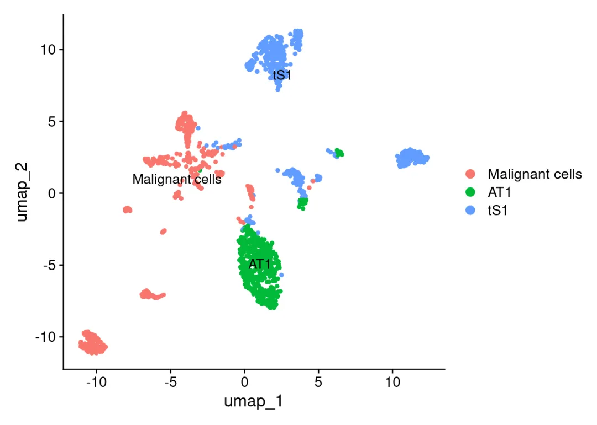
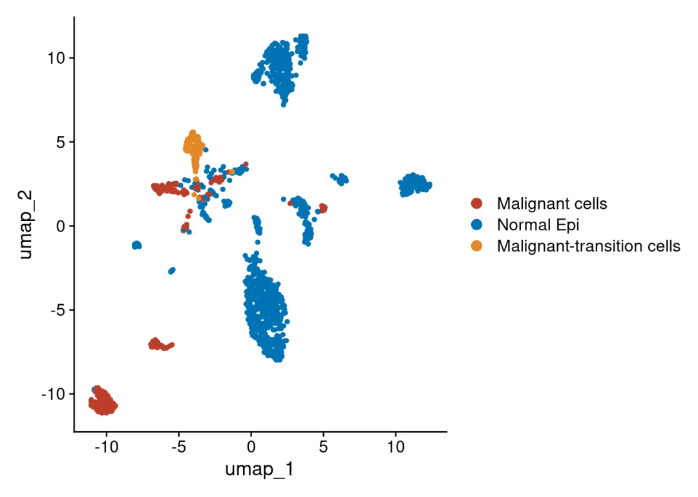
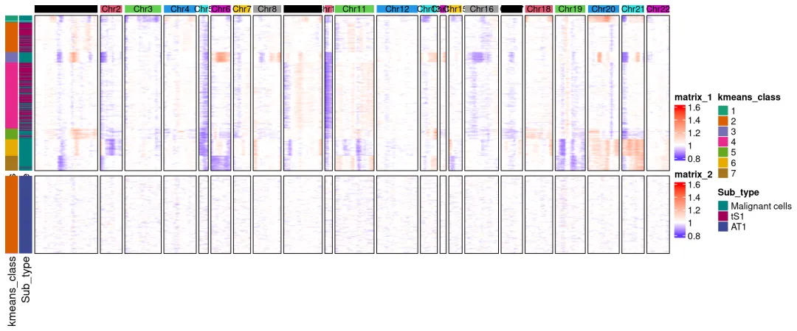
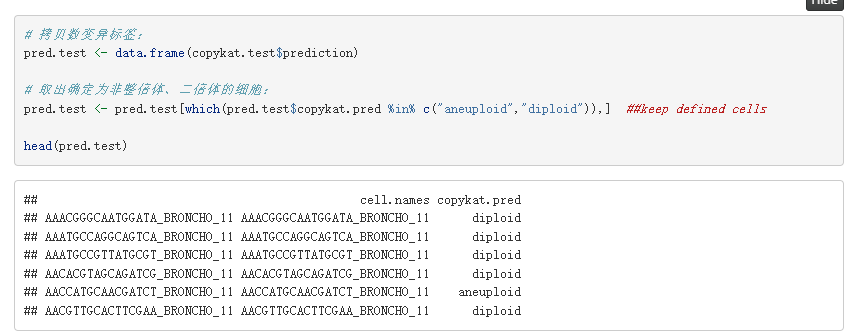
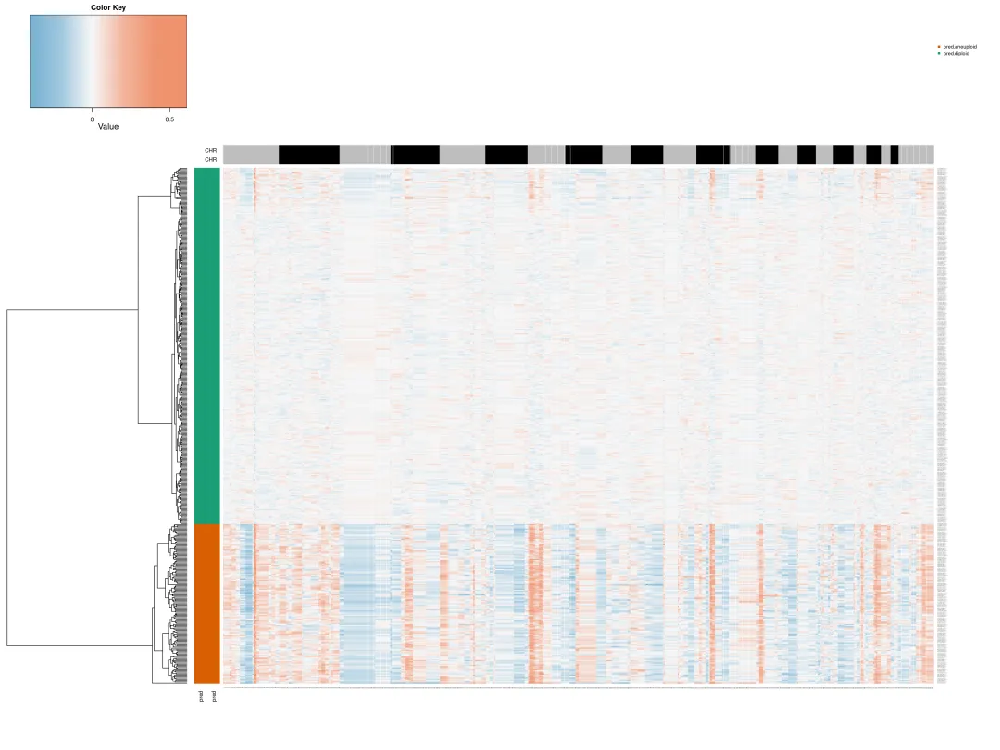
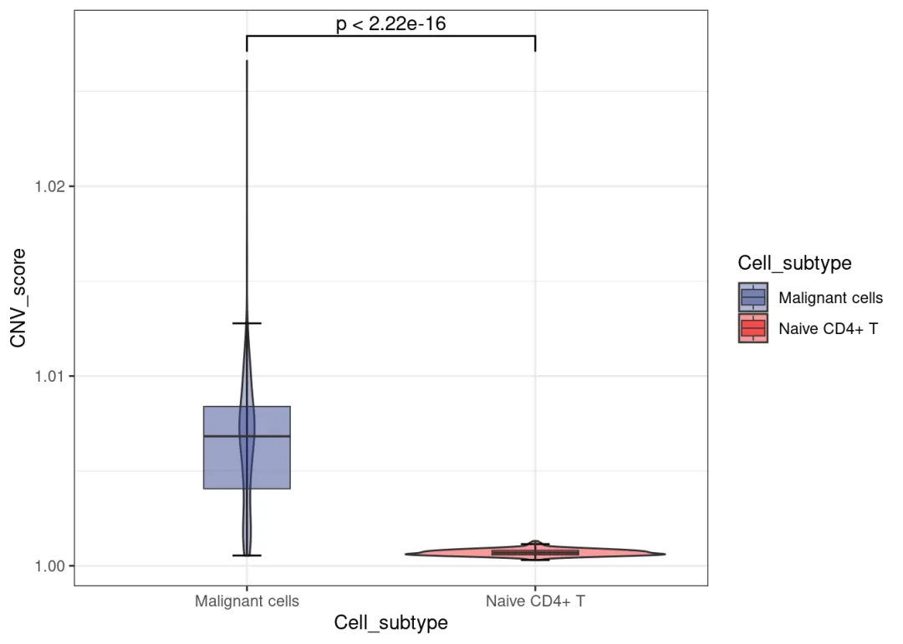
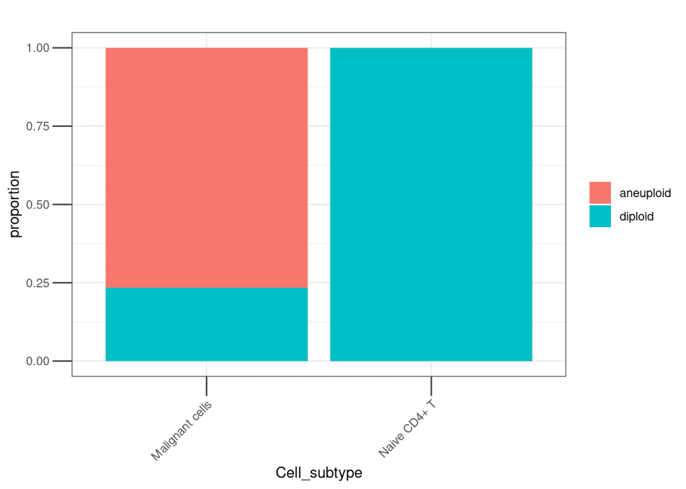

copykat和infercnv鉴定肿瘤细胞还挺准
原文：https://mp.weixin.qq.com/s?__biz=MzAwMzIzOTk5OQ==&mid=2247535878&idx=1&sn=ff9527456bf977fa615fe7f725a3a039&chksm=9b3c3456ac4bbd4038559b4cf750e87ab4706c7fbf9bb094fffe754dae4ebe31be8950de788e#rd 合集：单细胞教程全收录
一、写在前面
我们此前的scRNA-seq拷贝数变异学习手册，演示数据来源于转移性肺腺癌的单细胞转录组谱，共包含从44例正常组织或早期到转移期癌症患者的208,506个细胞。该数据集的原文发表在《Nature communication》上[1]。数据GSE131907可以从GEO数据库中直接下载[2]，原文是作者手搓了个函数，通过染色体区段的表达量滑动平均推断 CNV[3]，鉴定出来的肿瘤细胞与正常上皮(AT1、tS1)与infercnv鉴定出来的肿瘤细胞和正常上皮分布高度一致。更多单细胞技巧教程可见：限时回归！两个月时间，手把手教会你scRNA-seq数据分析！专题教程可见：R语言scRNA-seq拷贝数变异分析专题原文的分群：

经infercnv预测通过CNV score聚类、注释得到的结果，可以看出与作者注释的肿瘤细胞分布基本一致，当然也存在少量难以界定的"transition cells"：
infercnv热图如下，可以理解为白色区域不发生拷贝数变异，途中可以明显发现原文作者标注的Malignant cells包含大量的拷贝数变异事件:
小提琴中也可以观察到Malignant cells的CNV score明显高于身为正常上皮细胞的AT1与tS1。 再看看copykat，值得一提的是copykat的计算是不需要像infercnv那样选定参考细胞群体的。并且在返回的预测数据框中能够直接给出包含diploid和aneuploid的标签：
再看看copykat，值得一提的是copykat的计算是不需要像infercnv那样选定参考细胞群体的。并且在返回的预测数据框中能够直接给出包含diploid和aneuploid的标签：
热图可以看出diploid(双倍体，绿色侧栏标注)和aneuploid(非整倍体，红色侧栏标注)之间的cnv score差别非常大：
我们实际测试的时候混入了Naive CD4+ T Cell观察效果，可以看出T Cell的CNV score非常接近1，且没有一个 T Cell被标注为aneuploid，不过Malignant Cell当中出现了部分diploid，可以看出Copykat并非"贪心算法"。

更多拷贝数变异教程可见：空间转录组数据拷贝数变异分析学习手册肿瘤异质性分析必备| 一文学会四种scRNA-seq拷贝数变异分析如果需要单细胞数据分析教学、生信热点全文复现、自测数据个性化分析辅导、常态化实验学习，欢迎联系客服微信[Biomamba_zhushou]。
联系客服微信获取学习资料


学习手册以html文件格式提供，可在浏览器中打开并翻阅学习：
教程目录 ：
一、写在前面
二、可视化集锦
三、绪论
3.1 定义
3.2 主要研究成果
（1）区分肿瘤细胞与正常细胞
（2） 推断的拷贝数变异(CNA)谱的准确性
（3） 亚克隆结构推断准确性的评估
（4）计算效率
3.3 小结
四、infercnv
4.1 简介
4.2 安装
4.3 输入文件
4.4 infercnv workflow
4.5 infercnv实战
（1）数据概况
（2）infercnv流程
（3）热图优化
（4）小提琴图
五、copykat
5.1 copykat介绍
（1）简介
（2）copykat工作流程描述
（3）性能评估
（4）实体肿瘤中肿瘤细胞和正常细胞的分类
（5）应用于其他scRNA-seq技术
（6）推断乳腺肿瘤的克隆亚结构
（7）小结
5.2 copykat流程（1）安装（2）counts矩阵预处理（3）常用参数（4）copykat（5）整理数据（6）绘制热图5.3 copykat实战（1）数据概况（2）copykat（3）整理数据（4）热图绘制（5）探究一下拷贝数变异与原来亚群之间的关系（6）CNA score小提琴图
六、SCEVAN****
6.1 安装R包
6.2 加载R包6.3 单样本分析（1）加载数据（2）执行分析（3）结果查看6.4 多样本分析（1）加载数据 （2）执行分析（3）结果查看6.5 联合Seurat对象（1）创建Seurat对象**** （2）将拷贝数变异结果加入Seurat对象 （3）降维分群（4）可视化****
七、numbat********
7.1安装R包
7.2加载R包************7.3 数据下载7.4 等位基因数据准备（1）运行参数解释 （2）示例脚本（3）可能出现的报错（4）执行分析7.5 运行numbat（1）运行参数解释********（2）运行numbat7.6 结果解读（1）拷贝数景观和单细胞系统发育 （2）在系统发育上完善亚克隆（3）共识拷贝数区段（4）pseudobulks水平拷贝数变异（5）进化树八、环境版本信息 九、参考十、单细胞教程全收录****十一、欢迎致谢
文末下载链接中包含以下内容：

测试文件约55.57GB ，大家注意按需下载！
 参考：[1]https://pmc.ncbi.nlm.nih.gov/articles/PMC7210975 /[2]https://www.ncbi.nlm.nih.gov/geo/query/acc.cgi?acc=GSE131907
参考：[1]https://pmc.ncbi.nlm.nih.gov/articles/PMC7210975 /[2]https://www.ncbi.nlm.nih.gov/geo/query/acc.cgi?acc=GSE131907
[3]https://github.com/SGI-LungCancer/SingleCell/blob/master/R/calInferredCNA_for_CEP.R

如何联系我们

 留一个领取资料、开箱即用的单细胞分析镜像的微信号[Biomamba_zhushou]，方便各位随时交流。同时我们也构建了交流群矩阵，欢迎大家入群讨论。
大家可以阅读完这几篇之后添加给生信入门初学者的小贴士
没有检索，就没有发言权
留一个领取资料、开箱即用的单细胞分析镜像的微信号[Biomamba_zhushou]，方便各位随时交流。同时我们也构建了交流群矩阵，欢迎大家入群讨论。
大家可以阅读完这几篇之后添加给生信入门初学者的小贴士
没有检索，就没有发言权
已有生信基地联系方式的同学无需重复添加

 您点的每个赞和在看，我都认真当成了喜欢
您点的每个赞和在看，我都认真当成了喜欢